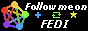
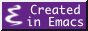
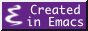

Leaf Eriksen
Hello netizen! I am a young UI/UX Designer studying at the University of San Francisco. I enjoy writing accessible HTML, Tailwind CSS and JS in Emacs, and designing in Adobe and Affinity suites. If you could use my skills, please take at my resume and send me an email!
In my free time I enjoy playing Osu!, reading visual novels, and watching mecha anime. If you are in SF and think we might be friends, let's meet up for coffee or tea sometime!

 
